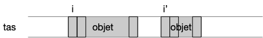

Briques de base
Le but d'un pseudo-code est d'être lu et compris par un humain. Il se doit d'être sans ambiguïté sans être lourd. Il est constitué d'instructions dont le but est soit :
- de manipuler des objets (création, affectation ou lecture)
- de contrôler le flux d'instructions (test et boucles).
Vous trouverez autant de type de pseud-code différents que d'informaticiens. Je vous donne ici "mon" pseudo-code. Son but est d'être assez explicite pour décrire sans ambiguïté les algorithmes de ce cours. Ne soyez donc pas étonné si en lisant d'autres pseudo-codes ils ne suivent pas mes notations : ayez l'esprit ouvert.
Nous allons monter ici une version de pseudo-code sans accès direct à la mémoire (ie. sans pointeur). Ce modèle est tout à fait fonctionnel et est utilisé dans les langages de programmation comme python par exemple. Nous ajouterons l'accès direct à la mémoire (bien) plus tard dans ce cours. Ce modèle est plus simple à comprendre et à implémenter que le modèle avec pointeur et ne change rien algorithmiquement. Il va cependant nécessiter des opérations élémentaires supplémentaires (on appelle ceci des overheads) pour trouver la valeur de la variable en mémoire par rapport à l'utilisation directe de pointeurs.
Commentaires
Comme en python, on considérera que tout ce qui suit le caractère # est considéré comme un commentaire dont le but est d'éclairer le lecteur.
# un commentaireObjets et opérations
Commençons par décrire les objets que l'on peut manipuler en pseudo-code et les moyens d'y accéder.
Objets
Les objets sont ce que l'on manipule en algorithmie. On a vu qu'a priori on peut n'utiliser que des entiers (ou de façon équivalente des suites de 0 et de 1), mais cela nuirait grandement à la lisibilité. En pseudo code on se permet d'utiliser d'autres formes d'objets appartenant à 5 types fondamentaux.
Objets basiques
Les objets que nous aurons directement à notre disposition sans avoir besoin de les définir sont appelés objets basiques et correspondent aux cinq types suivant
Définition
Un objets basiques peut être d'un des cinq types suivant : :
- le type
booléenqui contient deux objets :vraietfaux - le type
bitqui contient les 2 entiers :0et1 - le type
entierqui contient tous les entiers relatifs - le type
réelqui contient un ensemble dénombrable d'approximations de réels (un nombre fini de décimales) - le type
caractèrequi contient l'ensemble des glyphes UNICODE :"a","b", ...
Un type peut être vu comme un ensemble d'objets : le type entier contient tous les entiers possibles.
Le vide
En algorithmie on a également coutume de se doter d'un élément vide ∅ (nommé None en python, null en javascript ou encore void en C) qui peut être à la fois considéré comme un type ou un objet :
Définition
- le type vide
∅ne contient aucun objet. On l'utilise pour des fonctions ne rendant aucun objet par exemple - l'objet vide
∅est de tous les types (le∅entier, bit, ...). Utilisé pour simuler un soucis ou un cas particulier : une fonction division pouvant rendre soit un réel soit le vide si on divise par 0 par exemple.
Autres types
Tous les autres types d'objets que l'on peut imaginer seront des compositions de ces 5 types d'objets (un point en 3D est constitué de 3 réels, une chaîne de caractères est un tableau de caractères, etc).
Taille et stockage des objets
Tous les objets basiques sont considérés de taille fixe. Classiquement :
- un booléen à une taille de 1bit
- un caractère à une taille de 32bit si on utilise les caractères Unicode
- un réel à une taille 64bit si on utilise la norme IEEE 754 double précision
- un entier à une taille de 64bit
Se restreindre aux entiers entre $-2^{63}$ à $2^{63}$ n'est pas contraignant en pratique et c'est d'ailleurs ce que beaucoup de langages de programmation font (même souvent ils sont codés sur 32b). Les languages de programmation comme python pour lesquels un entier n'est pas borné considèrent en interne qu'un entier est en fait une suite d'entiers codés sur 64bits. Ceci est cependant transparent pour l'utilisateur.
À retenir
On considérera toujours qu'un objet basique est de taille connue et donnée au début du programme mais que cela n'interférera pas avec son exécution (on ne créera par exemple pas d'entiers trop grands par exemple).
Les objets que l'on manipule doivent pouvoir être conservés pour que l'on puisse les réutiliser tout au long du programme. Cet espace espace de stockage, que l'on nomme une mémoire, est identifié d'un point de vue algorithmique, à une gigantesque suite de cases adjacentes à laquelle l'algorithme peut accéder en 1 instruction et pouvant contenir un objet basique. An algorithmie, on ne préoccupe pas vraiment de ce qu'est la mémoire.cela peut être celle de l'informaticien lecteur ou sur un ordinateur : peu importe.
Implémentation en python
En python, les objets sont stockés dans une partie de la mémoire nommée tas (le tas est un tableau où chaque case contient 1 byte = 8 bit).

Les objets sont stockées dans le tas. Notez que le tas peut contenir des "trous", c'est à dire des endroits sans objets.
Opérations
Les opérations que peuvent effectuer les pseudo-codes sont liées aux objets. On doit pouvoir :
- créer des objets : le caractère "Ç", l'entier
42, etc... - opérer sur des objets : rendre la somme de deux entiers, le résultat d'une formule logique, etc
- afficher un objet. On suppose que l'on possède une opération unaire spéciale nommée
affichequi affiche à l'écran (ou à n'importe quoi permettant à l'utilisateur d'avoir un retour) l'objet. Par exempleaffiche 42va afficher l'objet entier valant 42 à l'écran.
Créer des objets
La seule façon de créer un objet à partir de rien est d'écrire sa valeur. Par exemple :
42Crée un objet entier de valeur 42
Opérations
De façon formelle :
Définition
une opération est une fonction dont l'espace de départ est un produit cartésien de types et l'espace d'arrivée un type donné. Elle prend en paramètre des objets (de l'espace de départ) et produit un objet du type de l'espace d'arrivée.
Les opérations sont le second moyen de créer des objets. Par exemple le booléen Vrai est créé comme résultat de l'opération 40 > 2. Les seules opérations définies par défaut dans tout pseudo-code sont peu nombreuses :
- pour les entiers et les réels :
- arithmétique : addition (
+), soustraction (-), multiplication (*), division (/) - opérations usuelles comme prendre la valeur entière, la valeur absolue, ...
- la division entière de deux nombre (
//) et le modulo (%) - logique : égalité (avec le signe
==), plus petit que (<), plus grand que (>), plus petit ou égal (≤), plus grand ou égal (≥)
- arithmétique : addition (
- pour les caractères :
- logique : égalité (avec le signe
==)
- logique : égalité (avec le signe
- opérations sur les bits et les booléens :
- "négation logique" (non,
NOT, $\neg$), - "et logique" (et,
ET,&&,ANDou $\land$), "ou logique" (ou,OU,||,ORou $\lor$)
- "négation logique" (non,
40 + 2 # rendra l'objet entier 42Toutes les autres opérations devront être définies soit dans le pseudo-code (avec des fonctions, comme on va le voir) soit dans un texte avant celui-ci.
Affichage
Enfin, la dernière opération autorisée pour les objet est l'affichage :
affiche 42L'affichage est destiné, comme le commentaire, au lecteur du pseudo-code. Son but est de lui montrer des résultats intermédiaires intéressant lors de l'exécution du pseudo-code. Ne confondez pas un commentaire avec un retour de fonction : ce qui est affiché sort du contrôle du pseudo-code. Dans l'exemple précédent, l'entier 42 est affiché, le pseudo-code n'en a pas conscience.
À retenir
Pour distinguer le retour de fonction, d'un affichage supprimez tous les affichages de votre pseudo-code et il doit continuer de fonctionner.
Variables
Une variable permet de retrouver un objet stocké en mémoire pour sa réutilisation :
Définition
Une variable est un nom auquel est associé un objet d'un type donné.
Les variables nous permettent de manipuler les objets. Conceptuellement parlant, ce sont juste des liens vers les objets qu'elles référencent.
En algorithmie, tout comme pour les objets on ne se préoccupe pas vraiment de où sont stockés les variables. On sait qu'elles existent elles sont rangés dans une partie de la mémoire différentes des objets (les variables ne sont pas considérés comme des objets).
Implémentation en python
En python, elles sont stockées dans une partie de la mémoire nommée pile et contiennent l'indice de la mémoire du tas où commence l'objet qu'elle référence. Chaque variable est donc juste assez grande pour stocker un indice (64bit sur les ordinateur actuel ce qui permet d'avoir théoriquement un tas de taille $2^{64}$byte = 18446744073709551616B = 16777216 terabyte).

Chaque variable a la même taille et sont stockées de façon consécutives dans la pile. En effet, les variables sont crées au début de l'algorithme et sont toues supprimées en même temps à la fin de l'algorithme.
Définition d'une variable
Avant de pouvoir être utilisée, une variable doit être définie. La ligne suivante définie une variable de nom $a$ pouvant référencer un objet de type entier :
a := entierLa ligne précédente crée une nouvelle variable nommée a pouvant référencer des objets de type entier. Dans tout le reste du pseudo-code, on sera sur que a contient une valeur entière.
Définition
On utilise l'opérateur de définition := pour créer une variable. Le format général d'une définition de variable est :
nom_de_la_variable := type_des_objets_qu_elle_peut_référencerEn pseudo-code, comme le principal soucis est la non ambiguïté, une variable ne peut contenir que des objets d'un type spécifié lors de sa définition. Définir une variable avant de l'utiliser est utilisé dans certains langages de programmation (java, rust, go) mais pas d'en d'autres comme le python où une variable peut être associée à des objets de types différents.
Affectation
Une fois la variable crée, on peut lui affecter des objets, par exemple pour notre variable a crée précédemment :
a ← 3La ligne précédente La ligne précédente associe ainsi à la variable a un objet entier valant 3.
Définition
On utilise l'opérateur d'affectation ← pour affecter une variable. Le format général de l'affectation d'un objet à une variable est :
nom_de_la_variable ← objets_qu_elle_va_référencerOn n'utilisera pas le signe = en pseudo-code pour l'affectation car cette opération n'est pas symétrique : à gauche une variable à droite un objet.
Comme le symbole ← n'est pas présent sur un clavier, de nombreux langages de programmation utilisent cependant le signe = pour une affectation.
Une variable est une opération temporaire. On peut réaffecter une variable à un autre objet au cours du pseudo-code :
a := entier
# des instructions
a ← 4
# des instructions
a ← 2Après la troisième ligne, le code précédent associe la variable a à un entier valant 4 et à un entier valant 2 après la cinquième ligne. Il est important de noter que :
À retenir
Une variable n'est pas un objet, c'est un lien vers un objet qui pourra changer au cours du temps.
Après la définition d'une variable, elle n'est encore liée à aucun objet, va valeur est indéfinie. Il ne faut pas l'utiliser avant sa première affectation.
Utilisation
Utiliser une variable consiste à la remplacer dans l'instruction par l'objet qu'elle référence. Par exemple :
a := entier
a ← 42
affiche aLe code précédent affiche l'objet référencé par $a$. Il est équivalent à : affiche 42.
Définition
Utiliser une variable dans un code revient à la remplacer par l'objet qu'elle référence. Ce remplacement se fait avant l'exécution de l'instruction.
Regardons ceci avec quelques exemples :
a := entier
a ← 42
b := entier
b ← aLa ligne 4, une instruction d'affectation, s'exécute de la façon suivante :
- on commence par retrouver objet à droite de l'opérateur
←. C'est une variable : on récupère son objet, un entier valant 42 - on affecte cet objet à la variable à gauche de l'opérateur
←, la variableb
Autre exemple :
a := entier
a ← 41
b := entier
b ← a + 1La ligne 4, une instruction composée d'une opération puis d'ue affectation, s'exécute de la façon suivante :
- on commence par retrouver objet à droite de l'opérateur
←. C'est le résultat d'une opération :- pour effectuer l'opération, il faut commencer par retrouver l'objet associé à
a: un entier valant 41 - on peut maintenant effectuer l'opération d'addition qui rend un objet de type entier valant 42
- pour effectuer l'opération, il faut commencer par retrouver l'objet associé à
- on affecte cet objet à la variable à gauche de l'opérateur
←, la variableb
Attention cependant :
À retenir
On ne peut utiliser une variable qu'après l'avoir affectée. Utiliser une variable qui n'a été que définie est interdit en algorithmie.
Type d'un objet
On aura parfois besoin de connaître le type d'un objet pour définir une variable du même type. On suppose qu'il existera toujours une opération unaire spéciale nommée type qui rend le type de l'objet passé en paramètre, et que l'on pourra utiliser dans les déclarations de variables. Par exemple type 42 va rendre entier. Ceci permet d'écrire :
a := entier
b := type aTableaux
Définition
Un tableau est un conteneur nommé pouvant contenir $n$ variables de même type. $n$ est la longueur ou la taille du tableau. La taille d'un tableau est déterminée à sa création et ne peut être modifiée. Chaque variable du tableau peut être accédée via son indice, qui est un entier entre $0$ et $n-1$.
Si le tableau est nommé $T$ :
- $T.\mbox{longueur}$ sera égal à sa taille.
- $T[i]$ est sa variable d'indice $i$ si $0 \leq i < n$
- $T[-i]$ vaut $t[n-i]$ si si $0 < i \leq n$
Le type d'un tableau est défini par le type des objets qu'il contient entre crochet : [type].
Créons un objet tableau pouvant contenir 13 variables de type entier :
T := [entier] # création de la variable pouvant accueillir un tableau d'entier
T <- [entier]{longueur: 13} # création d'un tableau pouvant contenir 13 variables entièresDéfinition
- le format général de la création d'une variable tableau :
nom_du_tableau := [type] - création d'un tableau de longueur $n$ :
[type]{longueur: n}
Un tableau est un mix entre variables et objet : c'est un objet contenant des variables de même type.
Lors de la définition d'un tableau on crée à la fois la variable contenant le tableau et le tableau lui-même qui est une suite de $n$ variables.
La remarque ci-dessus est cruciale à comprendre car cela peut entraîner tout un tas d'effet de bord incompréhensible sinon. Pour comprendre ce qu'il se passe, voyez comment python gère les tableaux :
Implémentation en python
Une façon d'implémenter cette structure en pratique est de stocker les différentes références des variables du tableau de façon contiguë en mémoire pour pouvoir y accéder rapidement pour y être lue ou modifiée :

L'implémentation en python est simple et générale mais nécessite une indirection : avant d'accéder à un objet on passe d'abord par son adresse.
Puisque les tailles des objets sont connus, on peut éviter cette indirection en stockant directement les objets de façon contiguës en mémoire. C'est ce que font des languages comme le rust, le C ou encore le go (ils le font aussi entre la pile et le tas, la plupart des variables étant directement stockées dans la pile).
Mais cette rapidité interne vient avec une complexité supplémentaire : la nécessité d'avoir un nouveau type d'objet appelé pointeur (qui correspond à une adresse en mémoire) mais que nous n'aborderons que bien plus tard.
On utilise un tableau comme une collection de variables, par exemple :
T := [entier]
T ← [entier]{longueur: 3}
T[0] ← 41
T[1] ← 1
T[2] ← T[0] + T[1]La seule opération spécifique à un tableau est sa création qui est un mix entre création d'objet et création de variable, puis on affecte ses variables avant de pouvoir les utiliser.
À retenir
Tout comme une variable, une fois le tableau créé, la valeur de chaque case est indéterminée ! Il est indispensable d'initialiser les valeurs de chaque case avant de les utiliser.
Toutes les autres opérations sur les tableaux sont faites graces aux opérations des objets basiques qui les composent. Il n'y a pas d'opérations spécifiques à ceux-ci :
À retenir
Les opérations sur les tableaux seront toujours des opérations composées d'une suite d'opérations effectuées sur les objets basiques les constituants.
Ainsi, on ne peut pas affecter un tableau. Il faut créer un nouveau tableau puis y recopier tous les éléments de l'ancien.
On considère que :
- créer un tableau ne prend pas plus de temps que de créer une variable (1 instruction) car sa longueur est fixée et que les variables qui le constitue ne sont pas initialisées,
- la taille en mémoire d'un tableau est proportionnelle à la taille d'une variable fois sa longueur,
- accéder à une variable d'indice donné d'un tableau ne prend pas plus de temps que d'accéder à l'objet d'une simple variable (1 instruction).
Les tableaux peuvent être simples comme une suite finie d'entiers ou des types plus complexes comme une matrice à 2 dimensions où chaque élément du tableau est un autre tableau.
Tranches
On utilisera parfois, comme en python par exemple des sous tableaux via des tranches (slices en anglais) :
T[i:]représentera le tableau constitué des éléments de T à partir de l'indice i inclus jusqu'à la finT[:j]représentera le tableau constitué des éléments de T à partir de l'indice 0 inclus jusqu'à j excluT[i:j]représentera le tableau constitué des éléments de T à partir de l'indice i inclus jusqu'à j exclu
Tout comme pour les tableaux, on ne peut pas affecter une tranche de tableau. Il faut créer un nouveau tableau puis y recopier tous les éléments de l'ancien.
Chaînes de caractères
Les chaines de caractères sont un tableau uniquement composés de caractères. Cette structure est utilisée lorsque l'on veut écrire ou représenter plus qu'un caractère, c'est à dire quasi tout le temps.
Une chaîne de caractères est un tableau constitué uniquement de caractères.
Comme ce sont des tableaux, on peut :
- créer une chaîne de caractères :
"salut"crée la chaîne contenant les caractères"s","a","l","u"et"t"de façon contiguë en mémoire. - affecter une chaîne de caractères à une variable prend 1 instruction :
s ← "salut"prend 2 instructions, une pour la création et une pour l'affectation. - accéder à un caractère particulier en utilisant les crochets :
s[2]vaut le caractère"l" - connaître la longueur de la chaîne avec :
s.longueur
Les chaines étant très utilisées, des langages comme python les considèrent comme un type de base et considèrent les caractères comme étant des chaîne de langueur 1.
Chacune des quatre opérations précédentes (création, affectation, accès et concaténation) prend 1 instruction (les chaînes crées sont des constantes).
La chaîne de caractère étant très utilisée, on se permettra les abus suivant :
- de définir une chaîne directement :
s := chaîneen utilisant le type chaîne - puis de l'affecter :
s ← "Salut" - on définit l'opération de concaténation avec l'opérateur
+:"comment vas-tu" + " yau d’poêle ?"vaut la chaîne de caractères"comment vas-tu yau d’poêle ?"
Définition
Le type chaîne peut être vu comme un synonyme [caractère] sauf que l'on ne peut pas modifier un de ses indices (s[2] ← "p" ne sera pas une instruction valide), bien que l'on puisse y accéder (affiche s[2] sera une instruction valide). Un tableau de chaînes sera de type [chaîne].
Instructions de contrôle
Si un des deux buts d'une instruction est de créer des objets à partir d'autres (ce que l'on vient de voir), le second but est de contrôler le flux d'instructions à exécuter. Ces instructions sont de deux types :
Ces formes d'instruction nécessitent de grouper les instructions en blocs.
Blocs
Lier les instructions en blocs :
Définition
type_de_bloc:
instruction 1
instruction 2
...
instruction n
On décale les instructions du bloc de sa définition.
Ce formalisme a été popularisé par python et permet de voir du premier coup d'œil les instructions d'un bloc.
Exécution conditionnelle d’instructions
On veut pouvoir exécuter un bloc de code si une condition logique est VRAIE :
Définition
si (condition logique):
instruction 1
...
instruction n
Cette instruction basique suffit pour gérer toutes les exécutions de bloc conditionnelles, mais pour plus de lisibilité on admettra plein de variantes comme la variante "si-sinon" :
si (condition logique):
instruction 1
...
instruction n
sinon:
instruction 1
...
instruction n'
ou encore "si-sinon si" :
si (condition logique):
instruction 1
...
instruction n
sinon si (autre condition logique):
instruction 1
...
instruction n'
Ou tout mix de tout ça (comme "si-sinon si-sinon"), du moment que c'est clair !
Écrire la variante si, sinon si, sinon avec la forme initiale si.
corrigé
corrigé
si (conditionA):
# instructions A
sinon si (conditionB):
# instructions B
sinon:
# instructions CSe traduit en :
si (conditionA):
# instructions A
si ((NON (conditionA)) ET (conditionB)):
# instructions B
si ((NON (conditionA)) ET (NON (conditionB))):
# instructions CRépétition
On doit pouvoir répéter un bloc tant qu'une condition logique est vérifiée :
Définition
tant que (condition logique):
instruction 1
...
instruction n
Le ploc précédent est exécuté tant que la condition logique est vraie.
Tout comme l'exécution conditionnelle, la forme précédente suffit pour exprimer toutes les formes de répétition possible, mais on admet la variation suivante, très utile :
pour chaque élément x d'un tableau:
instruction 1
...
instruction n
On exécutera alors le bloc autant de fois qu'il y a d'éléments dans le tableau et à chaque itération du bloc, la variable x (de type de celui des objets stockés dans le tableau) vaudra un autre élément du tableau. On prendra les éléments du tableau par indice croissant.
Le code précédent est équivalent au code suivant, moins élégant, mais qui explicite le numéro de l'itération courante d'un tableau de chaînes :
x := entier
i := entier
i ← 0
tant que i < tableau.longueur:
x ← tableau[i]
instruction 1
...
instruction n
i ← i + 1Comme on va souvent faire des itérations sur des intervalles d'entiers, on utilise les notations suivantes :
[a .. b]pour représenter l'intervalle formé des entiers allant deaàb(cet intervalle peut être vide) par incrément de +1,[a .. b[pour représenter l'intervalle fermé des entiers allant deaàb-1(cet intervalle peut être vide),]a .. b]pour représenter l'intervalle fermé des entiers allant dea + 1àb(cet intervalle peut être vide),]a .. b[pour représenter l'intervalle fermé des entiers allant dea + 1àb -1(cet intervalle peut être vide).
On peut alors écrire, par exemple :
x, i := entier
pour chaque i de [0 .. 10000[:
x ← i + xÉcrire le code suivant en utilisant la notation intervalle :
pour chaque élément x de tableau:
instruction 1
...
instruction n
corrigé
corrigé
x := chaîne
i := entier
pour chaque i de [0 .. tableau.longueur[:
x ← tableau[i]
instruction 1
...
instruction n